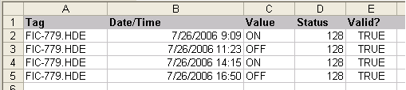

Write historical data to a DeltaV Continuous Historian database
The following example illustrates how to write data to a DeltaV Continuous Historian database using the standard data format. You can also create custom VBA programs to write data.
In this scenario, plant personnel are required to record any changes they make to a manually-operated valve. An Excel worksheet is used to record the changes. At the end of each shift, this information must be stored in a DeltaV Continuous Historian database.
The Write Historical Data command in DeltaV Reporter can be used to write this manually recorded data to the database. This command is only supported from DeltaV workstations on the local control network.
For DeltaV Reporter to accept this data, it must be entered into an Excel worksheet in three to five columns containing the values described in the following table. Columns one through three are required; columns four and five are optional.
| Column Number: | 1 (required) | 2 (required) | 3 (required) | 4 (optional) | 5 (optional) |
|---|---|---|---|---|---|
|
Description |
tag name |
time stamp |
value |
parameter status value |
validity |
|
Data type (restrictions) |
string (upper case with .HDE extension) |
Excel time and date formats separated by a space. |
Floating point, string, or blank. Excel interprets the contents of the cell according to standard Excel rules. |
Integer (0-255)1 |
128 |
|
Example |
FIC-779.HDE |
7/26/06 12:42PM |
OPEN |
Boolean (accepts TRUE or FALSE) |
TRUE |
|
Note:
A blank cell is written as a zero-length string. |
|||||
Excel Example
The following illustration shows the set of data that occurred during the shift for the manually-operated valve:

To write these data values to the DeltaV Continuous Historian database, complete the following steps:
- In DeltaV Explorer, select the Continuous Historian subsystem for the workstation, open the Continuous Historian Properties dialog, and confirm that the Enabled check box is selected.
- Click the Advanced tab and then click the Enable historical data entry check box.
- Stop the DeltaV service. Use Task Manager to verify that DvcHScan.exe, DvHistorianServerHost.exe and DvHistorianServerHost_2.exe have stopped before restarting the service. This ensures that enabling/disabling of CH and HDE took effect.
- Restart the DeltaV service.
- Start Microsoft Excel.
- On the Add-Ins tab, in the DeltaV group, click .
- In the Write Historical Data dialog, specify or browse to the historical data server to which you want to write data.
- Select Local Time or GMT in the Worksheet Time Mode box. If you select GMT, you can also specify an offset in hours and minutes. (The DeltaV Continuous Historian database records all times in GMT.)
- Click Write Data.
Reviewing the data written to the DeltaV Continuous Historian database
After writing data to the DeltaV Continuous Historian database, you can retrieve the data using DeltaV Reporter worksheet functions.
You can also use the Process History View application to view the data written to the DeltaV Continuous Historian database. Note that Process History View cannot trend alphanumeric values that are entered through the Write Historical Data command in DeltaV Reporter. Also note that you must enter .HDE tags manually in Process History View; they are not browsable.
In the DeltaV Operate run-time environment, you can display a trend chart of historical data that includes values written to the DeltaV Continuous Historian database by the Write Historical Data command in DeltaV Reporter by using an Embedded Trend object.